Topic 2 Linear Regression
2.1 R Packages and Datasets for Topic 2
The following packages are used for this topic and are loaded when needed.
Code
library(ggplot2) # Advanced graphing capabilities
library(cowplot) # Arrange separate plots in a grid
library(ggtext) # Annotate ggplots
library(jtools) # Concise regression results
library(dplyr) # Easier programming
library(GGally) # Scatterplot Matrix
library(vtable) # Summary statistics tables
library(MKT4320BGSU)
data(advtsales)
data(dssales)2.2 Motivation
Regression allows marketers to:
- Understand relationships between a dependent variable and one or more independent variables
- Determine the relative strength of different independent variables
- Make predictions
2.3 Understanding Regression Analysis
where
\(y\) is the dependent variable (DV)
\(x_k\) is the \(k\)th independent variable (IV)
\(\alpha\) is the constant or \(y\)-intercept
\(\beta_k\) is the regression coefficient for the \(k\)th IV
\(\varepsilon\) is the error term
- Objective
- Predict DV based on knowledge of the IV(s)

- Method
- OLS creates the “best” fitted line by minimizing the sum of the squared residuals
- OLS Minimizes Equation 2.1 below: \[\begin{equation} \sum_{i=1}^{n}{(y_i - \hat{y}_i)^2} \tag{2.1} \end{equation}\]
- OLS creates the “best” fitted line by minimizing the sum of the squared residuals
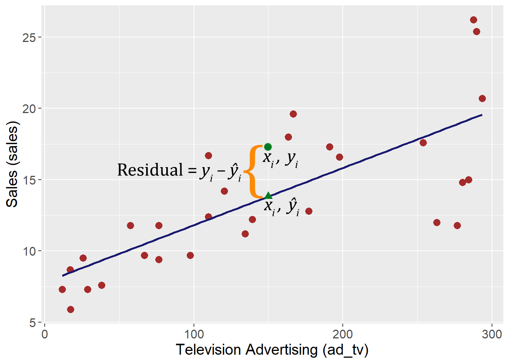
- Note: The “best” fitted regression line is not always the line that best represents the data

2.4 Conducting Linear Regression
2.4.1 Check Data Requirements
- Continuous DV
- Must be measured on an interval or ratio scale
- For nominal scale, use logistic regression
- For ordinal scale, use ordinal regression
2.4.2 Model Specification
- Pick IVs based on…
- Conceptual grounding
- Availability of data
- Including irrelevant IVs…
- Reduces parsimony
- May mask effects of other IVs
- Makes testing significance less precise
- Excluding relevant IVs…
- Seriously biases results
- Negatively affects interpretation
2.4.3 Model Estimation
- Estimation is typically done using OLS
- All statistical packages can conduct regression
| R | lm(dv ~ iv1 + iv2 + … + ivk) |
| Stata GUI | Statistics > Linear models and related > Linear Regression |
| Stata Command | regress dv iv1 iv2 … ivk |
| SPSS GUI | Analyze > Regression > Linear |
| SPSS Syntax | regression/dependent dv/enter iv1 iv2 … ivk |
| SAS | proc reg; model dv = iv1 iv2 … ivk; |
| Minitab | Stat > Regression > Regression |
2.5 Linear Regression Example
2.5.1 Overview
- Advertising and Sales data for 200 firms
- DV: Sales (in millions), \(sales\)
- IVs:
- TV Advertising (in 000s), \(ad\_tv\)
- Radio Advertising (in 000s), \(ad\_radio\)
- Paper Advertising (in 000s), \(ad\_paper\)
- Model: \(sales=\alpha+\beta_1ad\_tv+\beta_2ad\_radio+\beta_3ad\_paper\)
- Goal: Understand the relationship between various advertising types and sales
2.5.2 Summarize Data
2.5.2.1 Univariate Summary Statistics
Table 2.1: Summary Statistics
Code
# Use 'sumtable' from 'vtable' package
# 'summ', 'summ.names', 'numformat', 'title' for formatting only
sumtable(data=advtsales,
vars=c("ad_paper", "ad_radio", "ad_tv", "sales"),
summ=c('notNA(x)','mean(x)','sd(x)','pctile(x)[50]','min(x)','max(x)'),
summ.names=c("N", "Mean", "Std. Dev", "Median", "Min", "Max"),
numformat=label_number(accuracy = .02),
title=NA)| Variable | N | Mean | Std. Dev | Median | Min | Max |
|---|---|---|---|---|---|---|
| ad_paper | 200 | 30.56 | 21.78 | 25.76 | 0.30 | 114.00 |
| ad_radio | 200 | 23.26 | 14.84 | 22.90 | 0.00 | 49.60 |
| ad_tv | 200 | 147.04 | 85.86 | 149.76 | 0.70 | 296.40 |
| sales | 200 | 14.02 | 5.22 | 12.90 | 1.60 | 27.00 |
2.5.2.3 Box Plots
Figure 2.2: Box Plots
Code
# Create box plots for each variable
p1 <- ggplot(aes(x="", y=ad_tv), data=advtsales) +
geom_boxplot(staplewidth = 1) +
labs(x="ad_tv", y="")
p2 <- ggplot(aes(x="", y=ad_radio), data=advtsales) +
geom_boxplot(staplewidth = 1) +
labs(x="ad_radio", y="")
p3 <- ggplot(aes(x="", y=ad_paper), data=advtsales) +
geom_boxplot(staplewidth = 1) +
labs(x="adv_paper", y="")
p4 <- ggplot(aes(x="", y=sales), data=advtsales) +
geom_boxplot(staplewidth = 1) +
labs(x="sales", y="")
# Use cowplot::plot_grid() to combine them into single plot
plot_grid(p1,p2,p3,p4)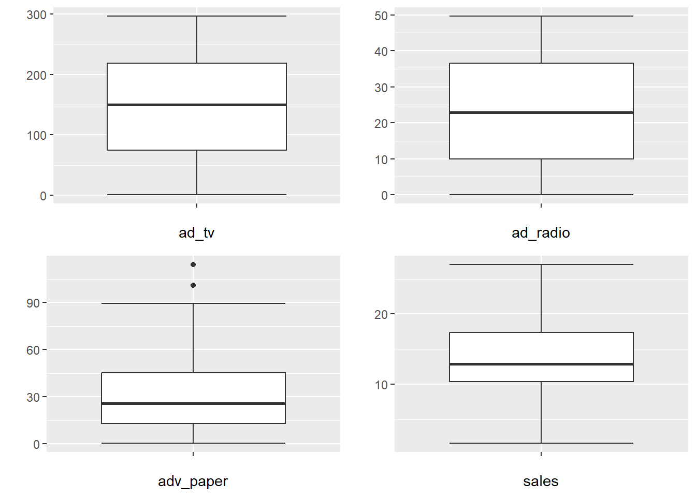
2.5.3 Results
2.5.3.1 Regression Results (Concise)
- Estimated regression equation: \(\hat{sales}=2.939+.046ad\_tv+.189ad\_radio-.001ad\_paper\)
Table 2.2: Regression Results (Concise)
[1] TRUECode
| F(3,196) | 570.2707 |
| R² | 0.8972 |
| Adj. R² | 0.8956 |
| Est. | S.E. | t val. | p | |
|---|---|---|---|---|
| (Intercept) | 2.9389 | 0.3119 | 9.4223 | 0.0000 |
| ad_tv | 0.0458 | 0.0014 | 32.8086 | 0.0000 |
| ad_radio | 0.1885 | 0.0086 | 21.8935 | 0.0000 |
| ad_paper | -0.0010 | 0.0059 | -0.1767 | 0.8599 |
| Standard errors: OLS |
2.5.3.2 Standard Results
Table 2.3: Regression Results (Standard)
Code
Call:
lm(formula = sales ~ ad_tv + ad_radio + ad_paper, data = advtsales)
Residuals:
Min 1Q Median 3Q Max
-8.8277 -0.8908 0.2418 1.1893 2.8292
Coefficients:
Estimate Std. Error t value Pr(>|t|)
(Intercept) 2.938889 0.311908 9.422 <2e-16 ***
ad_tv 0.045765 0.001395 32.809 <2e-16 ***
ad_radio 0.188530 0.008611 21.893 <2e-16 ***
ad_paper -0.001037 0.005871 -0.177 0.86
---
Signif. codes: 0 '***' 0.001 '**' 0.01 '*' 0.05 '.' 0.1 ' ' 1
Residual standard error: 1.686 on 196 degrees of freedom
Multiple R-squared: 0.8972, Adjusted R-squared: 0.8956
F-statistic: 570.3 on 3 and 196 DF, p-value: < 2.2e-162.5.3.3 Testing Overall Model Significance
- Relationship between DV and combined effects of IVs
- \(H_0:\beta_1=\beta_2=\beta_3=0\) vs. \(H_a:\text{at least one }\beta_k\ne0\)
- Use \(F\)-statistic to test
- Conclusion: With a \(F\)-statistic of \(570.3\) and a \(p\)-value \(< 0.001\), we conclude that at least one \(\beta_k\) is significant
2.5.3.4 Assessing Overall Model Fit
- How much variation in the DV is explained by the model
- Use \(R^2\) to assess
- Use \(\text{Adjusted }R^2\) to compare models
- Conclusion: Based on the \(R^2\), about \(90\%\) of the variance in \(sales\) is explained by the model
2.5.3.5 Individual Independent Variables
- Relationship between DV and each IV
- \(H_0:\beta_k=0\) vs. \(H_a:\beta_k\ne0\)
- Interpret significant relationships
- With a \(p\text{-value}<0.001\), \(ad\_tv\) has a significant effect on sales. A one unit increase in \(ad_tv\) is predicted to increases \(sales\) by \(.0457\) units.
- With a \(p\text{-value}<0.001\), \(ad\_radio\) has a significant effect on sales. A one unit increase in \(ad_radio\) is predicted to increases \(sales\) by \(.1885\) units.
- With a \(p\text{-value}=.860\), \(ad\_paper\) has no significant effect on \(sales\).
- Relative strength of IVs
- For relative strength, use standardized \(\beta_k\)s
- A standardized \(\beta_k\) is the effect of a single standard deviation change in the IV on the DV
- Higher absolute values are more important
- Conclusion: \(ad\_tv\) is the biggest driver of sales
Table 2.4: Standardized Beta Coefficients
Code
| Est. | S.E. | t val. | p | |
|---|---|---|---|---|
| (Intercept) | -0.00 | 0.02 | -0.00 | 1.00 |
| ad_tv | 0.75 | 0.02 | 32.81 | 0.00 |
| ad_radio | 0.54 | 0.02 | 21.89 | 0.00 |
| ad_paper | -0.00 | 0.02 | -0.18 | 0.86 |
| Standard errors: OLS; Continuous variables are mean-centered and scaled by 1 s.d. |
- Visualize each IV
- Sometimes it helps to visually examine the IVs for interprtation
- Plots show predicted DV at different levels of an IV, holding the other IVs constant at the mean value
Figure 2.3: Margin Plots
Code
# Use 'easy_mp' from 'MKT4320BGSU' to get margin plot
# '$plot' returns just the plot
# Add better axis lables
# Use 'ylim()' for same y-axis on all three plots
p1 <- easy_mp(results, focal="ad_tv")$plot +
labs(x="TV Advertising", y="Linear Prediction") +
ylim(5,25)
p2 <- easy_mp(results, focal="ad_radio")$plot +
labs(x="Radio Advertising", y="Linear Prediction") +
ylim(5,25)
p3 <- easy_mp(results, focal="ad_paper")$plot +
labs(x="Newspaper Advertising", y="Linear Prediction") +
ylim(5,25)
# Arrange three plots in a grid using package 'cowplot'
plot_grid(p1,p2,p3)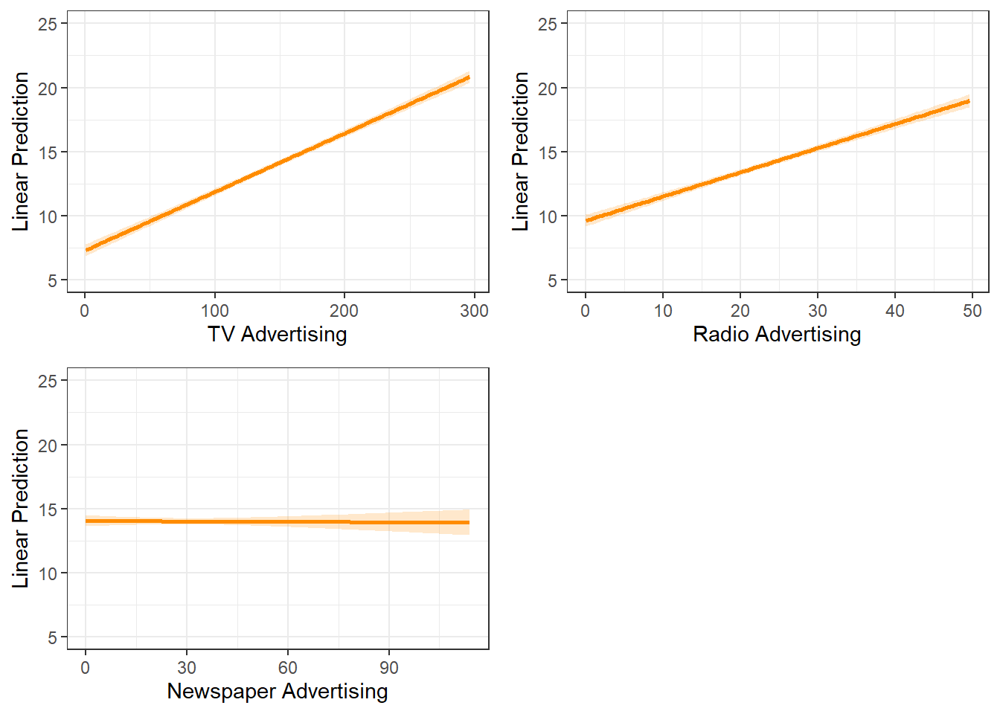
2.5.3.6 Model Prediction
- For simplicity, use only \(ad\_tv\) and \(ad\_radio\)
| Est. | S.E. | t val. | p | |
|---|---|---|---|---|
| (Intercept) | 2.9211 | 0.2945 | 9.9192 | 0.0000 |
| ad_tv | 0.0458 | 0.0014 | 32.9087 | 0.0000 |
| ad_radio | 0.1880 | 0.0080 | 23.3824 | 0.0000 |
| Standard errors: OLS |
- \(\hat{sales}=2.9211+.0458ad\_tv+.1880ad\_radio\)
- Predict sales for $100K television advertising and $10K radio advertising
- \(\hat{sales}=2.9211+.0458(100)+.1880(10)=9.381= \$9,381,000\)
- Visually examine prediction at different levels of \(ad\_tv\) and \(ad\_radio\)
Figure 2.4: Prediction Plots 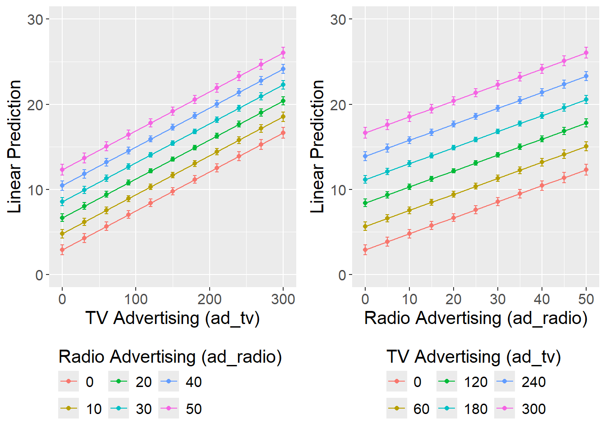
2.6 Categorical IVs
2.6.1 Overview
- May want to represent a qualitative variable…
- Gender of a buyer
- Success/Failure
- Region of the country
- Special situations
- …But the IVs are supposed to be continuous
- Use “dummy” variables to indicate occurrence or nonoccurence of a particular attribute
- Coded as 1 (usually if true) or 0 (usually if false)
- Dummy variables can shift the intercept, the slope, or both
- Intercept Shifter
- Dummy is only its own term in the model
- \(y=\alpha+\beta_1x+\beta_2D\)
- Slope Shifter
- Dummy is only an interaction with another IV
- \(y=\alpha+\beta_1x+\beta_2(x\times D)\)
- Intercept and Slope Shifter
- Dummy is own term and an interaction with IV
- \(y=\alpha+\beta_1x+\beta_2D+\beta_3(x\times D)\)
- Intercept Shifter
2.6.2 Intercept Shifter
- \(D=\begin{cases}1\text{ if true}\\0\text{ if false}\end{cases}\)
- Model: \(y=\alpha+\beta_1x+\beta_2D\)
- When \(D=0\):
\(\begin{array}{rcl}y & = & \alpha+\beta_1x+\beta_2(0)\\& = & \alpha + \beta_1x\end{array}\) - When \(D=1\):
\(\begin{array}{rcl}y & = & \alpha+\beta_1x+\beta_2(1)\\& = & (\alpha + \beta_2)+\beta_1x\end{array}\)
- When \(D=0\):
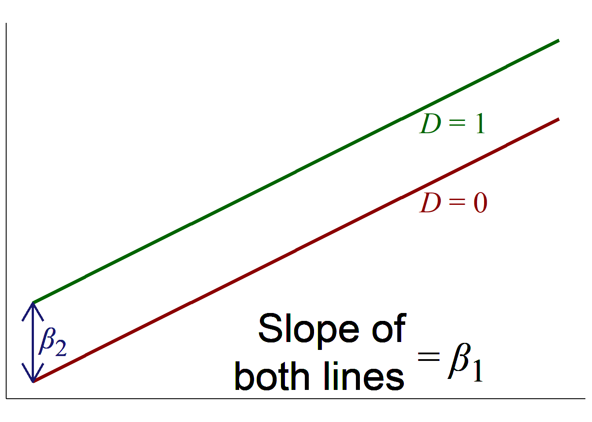
2.6.3 Slope Shifter
- \(D=\begin{cases}1\text{ if true}\\0\text{ if false}\end{cases}\)
- Model: \(y=\alpha+\beta_1x+\beta_2(x\times D)\)
- When \(D=0\):
\(\begin{array}{rcl}y & = & \alpha+\beta_1x+\beta_2(x\times 0)\\& = & \alpha + \beta_1x\end{array}\) - When \(D=1\):
\(\begin{array}{rcl}y & = & \alpha+\beta_1x+\beta_2(x\times 1)\\& = & \alpha + (\beta_1+\beta_2)x\end{array}\)
- When \(D=0\):
- Unusual to see only a slope shift
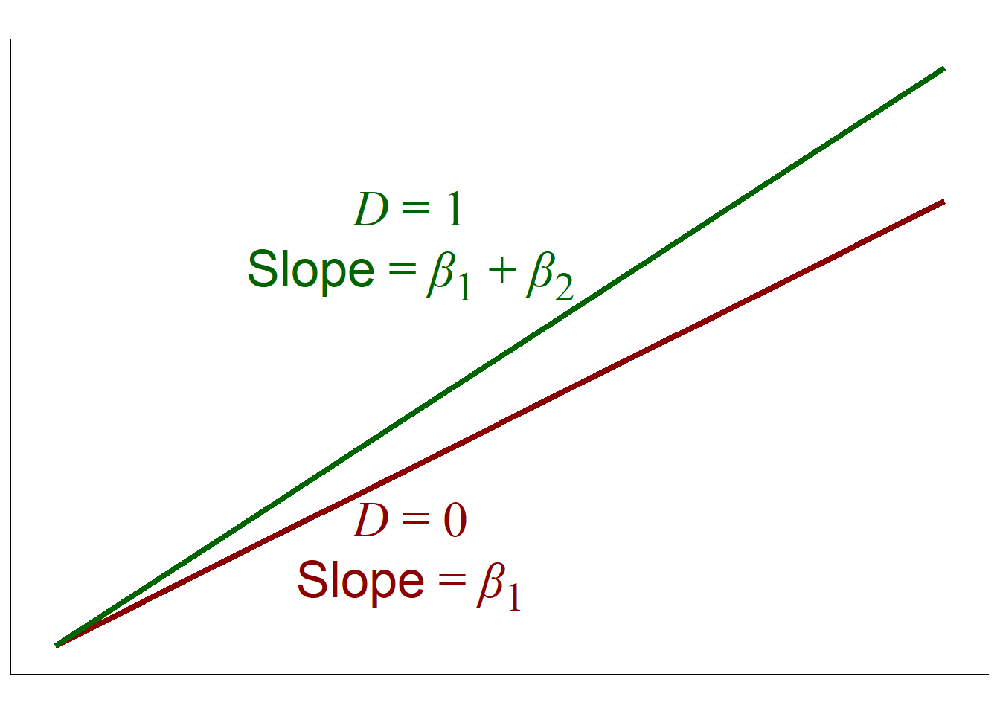
2.6.4 Intercept and Slope Shifter
- \(D=\begin{cases}1\text{ if true}\\0\text{ if false}\end{cases}\)
- Model: \(y=\alpha+\beta_1x+\beta_2D+\beta_3(x\times D)\)
- When \(D=0\):
\(\begin{array}{rcl}y & = & \alpha+\beta_1x+\beta_2(0)+\beta_3(x\times 0)\\& = & \alpha + \beta_1x\end{array}\) - When \(D=1\):
\(\begin{array}{rcl}y & = & \alpha+\beta_1x+\beta_2(1)+\beta_3(x\times 1)\\& = & (\alpha + \beta_2) + (\beta_1 + \beta_3)x\end{array}\)
- When \(D=0\):
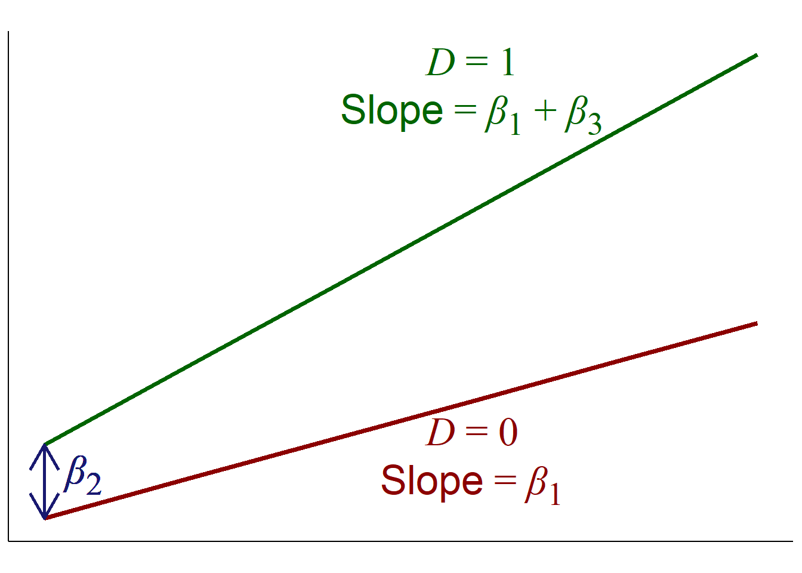
2.6.5 Multiple Levels
What if categorical IV has multiple levels (e.g., quarters)?
- Choose one level to be the base
- Create dummy variables for the other levels
- Levels must be mutually exclusive
- Dummy variables for four levels:
- Level 1, \(L_1=\begin{cases}1\text{ if true}\\0\text{ if false}\end{cases}\)
- Level 2, \(L_2=\begin{cases}1\text{ if true}\\0\text{ if false}\end{cases}\)
- Level 3, \(L_3=\begin{cases}1\text{ if true}\\0\text{ if false}\end{cases}\)
- Level 4, \(L_4=\text{base level; is true when }L_1=L_2=L_3=0\)
- Model: \(y=\alpha + \beta_1x + \beta_2L_1+\beta_3L_2+\beta_4L_3\)
- When Level 1:
\(\begin{array}{rcl}y & = & \alpha+\beta_1x+\beta_2(1)+\beta_3(0)+\beta_4(0)\\& = & (\alpha + \beta_2) + \beta_1x\end{array}\) - When Level 2:
\(\begin{array}{rcl}y & = & \alpha+\beta_1x+\beta_2(0)+\beta_3(1)+\beta_4(0)\\& = & (\alpha + \beta_3) + \beta_1x\end{array}\) - When Level 3:
\(\begin{array}{rcl}y & = & \alpha+\beta_1x+\beta_2(0)+\beta_3(0)+\beta_4(1)\\& = & (\alpha + \beta_4) + \beta_1x\end{array}\) - When Level 4:
\(\begin{array}{rcl}y & = & \alpha+\beta_1x+\beta_2(0)+\beta_3(0)+\beta_4(0)\\& = & \alpha + \beta_1x\end{array}\)
- When Level 1:
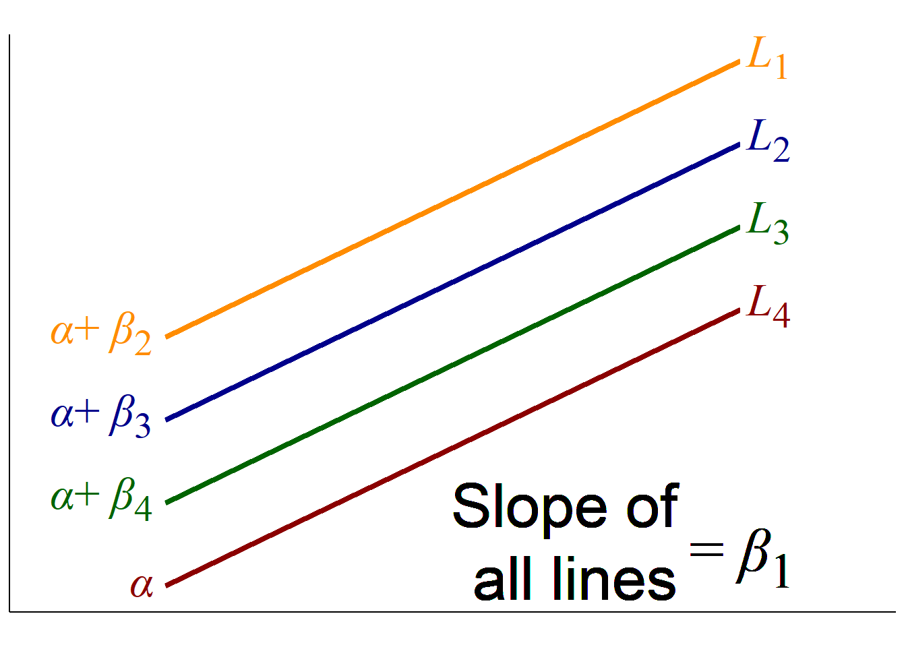
2.7 Categorical IVs Example
2.7.1 Overview
- Sales data for 28 department store locations across 47 weeks and 69 departments
- DV: Department Sales, \(sales\)
- IVs: Overall Store Size, \(size\)
- Week, \(week\) where 1 = \(week\) ending 11/11/11
- Predict sales by department
- Believe that the “holiday” season (or quarter 4) will be a driver of sales for some departments
- Generate dummy variable: \(q4=\begin{cases}1\text{ if }week\text{ in Quarter 4}\\0\text{ otherwise}\end{cases}\)
- Believe that the “holiday” season (or quarter 4) will be a driver of sales for some departments
2.7.2 Intercept Shift
- \(sales = \alpha + \beta_1size+\beta_2q4\)
- Results:
| F(2,1090) | 126.1302 |
| R² | 0.1879 |
| Adj. R² | 0.1864 |
| Est. | S.E. | t val. | p | |
|---|---|---|---|---|
| (Intercept) | 9993.3892 | 1890.0317 | 5.2874 | 0.0000 |
| size | 0.0546 | 0.0107 | 5.1210 | 0.0000 |
| q4Yes | -15153.3589 | 1012.8597 | -14.9610 | 0.0000 |
| Standard errors: OLS |
Figure 2.5: Margin Plot for Intercept Shifter
Code
# Use 'easy_mp' to create margin plot, '$plot' returns only plot
easy_mp(mod.is, focal="size", int="q4")$plot +
# Nicer axis labels
labs(y="Linear Prediction", x="Size", fill="Q4", color="Q4") +
# Add annotations (not necessary usually)
geom_segment(aes(x=145000, y=2758.8147, xend=145000, yend=17912.1735),
color="black", size=1, arrow=arrow(ends="both")) +
geom_richtext(x=173000, y=10000,
label="<i>β</i><sub>2</sub> = –15153.36",
color="black",label.color=NA, size=8, fill=NA, family="serif")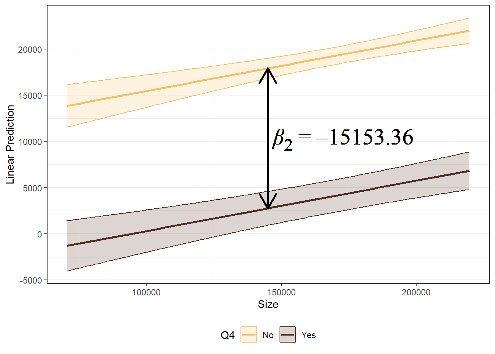
2.7.3 Slope Shift
- \(sales = \alpha + \beta_1size+\beta_2(size\times q4)\)
- Results:
| F(2,1090) | 128.2440 |
| R² | 0.1905 |
| Adj. R² | 0.1890 |
| Est. | S.E. | t val. | p | |
|---|---|---|---|---|
| (Intercept) | 6568.3795 | 1870.6049 | 3.5114 | 0.0005 |
| size | 0.0742 | 0.0107 | 6.9309 | 0.0000 |
| size:q4Yes | -0.0872 | 0.0058 | -15.0986 | 0.0000 |
| Standard errors: OLS |
Figure 2.6: Margin Plot for Slope Shifter
Code
# Use 'easy_mp' to create margin plot, '$plot' returns only plot
easy_mp(mod.ss, focal="size", int="q4")$plot +
# Nicer axis labels
labs(y="Linear Prediction", x="Size", fill="Q4", color="Q4") +
# Add annotations (not necessary usually)
geom_segment(aes(x=85000, y=12877.117, xend=85000, yend=19000),
color="black", size=1, arrow=arrow(ends="last")) +
geom_richtext(x=105000, y=20000,
label="Slope = <i>β</i><sub>1</sub> = .0742",
color="black",label.color=NA, size=8, fill=NA, family="serif") +
geom_segment(aes(x=85000, y=-500, xend=85000, yend=5461.182),
color="black", size=1, arrow=arrow(ends="first")) +
geom_richtext(x=118000, y=-2000,
label="Slope = <i>β</i><sub>1</sub> + <i>β</i><sub>2</sub> = –.0130",
color="black",label.color=NA, size=8, fill=NA, family="serif") +
# Change 'ylim' just to fit annotation on plot
ylim(-5000,25000)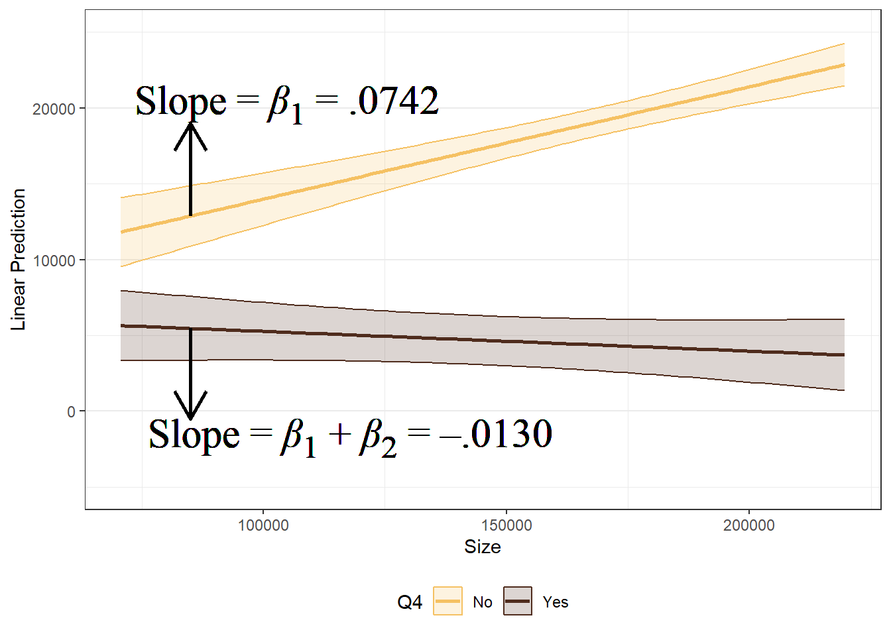
2.7.4 Intercept and Slope Shift
- \(sales = \alpha + \beta_1size+\beta_2q4+\beta_3(size\times q4)\)
- Results:
| F(3,1089) | 86.0379 |
| R² | 0.1916 |
| Adj. R² | 0.1894 |
| Est. | S.E. | t val. | p | |
|---|---|---|---|---|
| (Intercept) | 7811.3235 | 2126.7243 | 3.6729 | 0.0003 |
| size | 0.0673 | 0.0121 | 5.5712 | 0.0000 |
| q4Yes | -5482.4234 | 4466.5447 | -1.2274 | 0.2199 |
| size:q4Yes | -0.0567 | 0.0255 | -2.2229 | 0.0264 |
| Standard errors: OLS |
Figure 2.7: Margin Plot for Intercept and Slope Shifter Showing \(y\)-intercept
Code
# Using rarely used option 'focal_range' and 'ci'
easy_mp(mod.iss, focal="size", int="q4", focal_range=c(0,220000), ci=FALSE)$plot +
# Nicer axis labels
labs(y="Linear Prediction", x="Size", fill="Q4", color="Q4") +
# Add annotations (not necessary usually)
geom_segment(aes(x=0, y=2328.900, xend=0, yend=7811.323),
color="black", size=1, arrow=arrow(ends="both")) +
geom_richtext(x=40000, y=5000, label="<i>β</i><sub>2</sub> = –5482.42",
color="black",label.color=NA, size=8, fill=NA, family="serif") 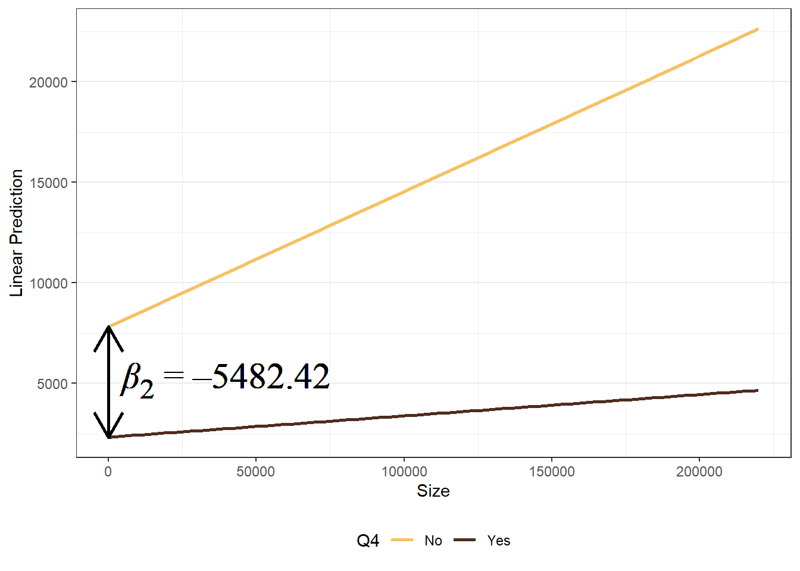
Figure 2.8: Margin Plot for Intercept and Slope Shifter
Code
# Use 'easy_mp' to create margin plot, '$plot' returns only plot
easy_mp(mod.iss, focal="size", int="q4")$plot +
# Nicer axis labels
labs(y="Linear Prediction", x="Size", fill="Q4", color="Q4") +
# Add annotations (not necessary usually)
geom_segment(aes(x=85000, y=13534.849, xend=85000, yend=19000),
color="black", size=1, arrow=arrow(ends="last")) +
geom_richtext(x=105000, y=20000,
label="Slope = <i>β</i><sub>1</sub> = .0673",
color="black",label.color=NA, size=8, fill=NA, family="serif") +
geom_segment(aes(x=85000, y=-1500, xend=85000, yend=3230.153),
color="black", size=1, arrow=arrow(ends="first")) +
geom_richtext(x=113000, y=-3000,
label="Slope = <i>β</i><sub>1</sub> + <i>β</i><sub>2</sub> = .0106",
color="black",label.color=NA, size=8, fill=NA, family="serif") +
# Change 'ylim' just to fit annotation on plot
ylim(-5000,25000)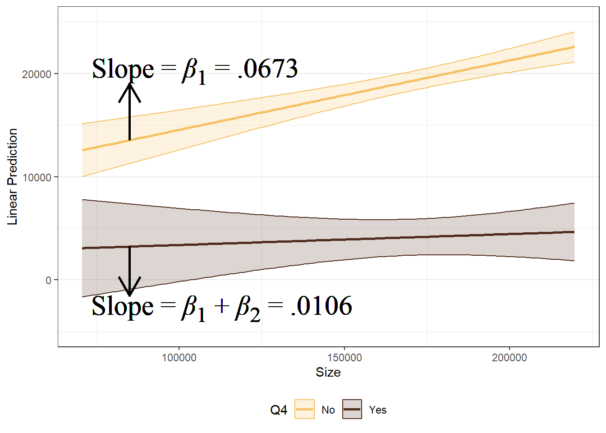
2.7.5 Intercept Shift with Multiple Levels
- \(sales=\alpha+\beta_1size+\beta_2q1+\beta_3q2+\beta_4q3\)
- Q4 is set as the base level
- Results:
| F(4,1088) | 307.2426 |
| R² | 0.5304 |
| Adj. R² | 0.5287 |
| Est. | S.E. | t val. | p | |
|---|---|---|---|---|
| (Intercept) | -5354.0323 | 1539.7359 | -3.4772 | 0.0005 |
| size | 0.0558 | 0.0081 | 6.8680 | 0.0000 |
| quarter1 | 7268.7033 | 904.6239 | 8.0351 | 0.0000 |
| quarter2 | 31313.5153 | 963.9526 | 32.4845 | 0.0000 |
| quarter3 | 10436.9137 | 917.0085 | 11.3815 | 0.0000 |
| Standard errors: OLS |
Figure 2.9: Margin Plot for Multiple Levels Showing \(y\)-intercept
Code
easy_mp(mod.mis, focal="size", int="quarter", focal_range=c(0,240000))$plot +
# Nicer axis labels
labs(y="Linear Prediction", x="Size", fill="Q4", color="Q4") +
# Expand axes for annotations; NOT USUALLY NECESSARY
scale_x_continuous(breaks=seq(0,240000,40000),
expand=expansion(mult=c(.2,.4)), minor_breaks=NULL) +
scale_y_continuous(limits=c(-10000,45000), expand=c(.025,.025),
breaks=seq(-10000,40000,10000), minor_breaks=NULL) +
# Add annotations; NOT USUALLY NECESSARY
geom_richtext(x=0, y=-5354.0323, label="<i>α</i>",
color="black",label.color=NA, size=6,
fill=NA, family="serif", hjust=1) +
geom_richtext(x=0, y=1914.6710,
label="<i>α</i>+ <i>β<sub>2</sub>",
color="black",label.color=NA, size=6, fill=NA,
family="serif", hjust=1) +
geom_richtext(x=0, y=5082.8814,
label="<i>α</i>+ <i>β<sub>4</sub>",
color="black",label.color=NA, size=6, fill=NA,
family="serif", hjust=1) +
geom_richtext(x=0, y=25959.4830,
label="<i>α</i>+ <i>β<sub>3</sub>",
color="black",label.color=NA, size=6, fill=NA,
family="serif", hjust=1) +
geom_richtext(x=240000, y=8026.6254,
label="<i>q</i>4 (<i>q</i>1=<i>q</i>2=<i>q</i>3=0)",
color="black",label.color=NA, size=4, fill=NA,
family="serif", hjust=0) +
geom_richtext(x=240000, y=15295.3287,
label="<i>q</i>1 (<i>q</i>1=1, <i>q</i>2=<i>q</i>3=0)",
color="black",label.color=NA, size=4, fill=NA,
family="serif", hjust=0) +
geom_richtext(x=240000, y=18463.5391,
label="<i>q</i>3 (<i>q</i>3=1, <i>q</i>1=<i>q</i>2=0)",
color="black",label.color=NA, size=4, fill=NA,
family="serif", hjust=0) +
geom_richtext(x=240000, y=39340.1407,
label="<i>q</i>2 (<i>q</i>2=1, <i>q</i>1=<i>q</i>3=0)",
color="black",label.color=NA, size=4, fill=NA,
family="serif", hjust=0) +
# Reorder legend
scale_fill_discrete(breaks=c("1", "2", "3", "4")) +
scale_color_discrete(breaks=c("1", "2", "3", "4"))
Figure 2.10: Margin Plot for Multiple Levels
Code
easy_mp(mod.mis, focal="size", int="quarter", ci=FALSE)$plot +
# Nicer axis labels
labs(y="Linear Prediction", x="Size", fill="Q4", color="Q4") +
# Add annotations; NOT USUALLY NECESSARY
geom_segment(aes(x=70000, y=-1451.3405, xend=70000, yend=5817.3628),
color="black", size=1, arrow=arrow(ends="both")) +
geom_richtext(x=74000, y=2500, label="<i>β</i><sub>2</sub> = 7268.70",
color="black",label.color=NA, size=5, fill=NA,
family="serif", hjust=0, angle=3.19109) +
geom_segment(aes(x=115000, y=1057.5329, xend=115000, yend=11494.4465),
color="black", size=1, arrow=arrow(ends="both")) +
geom_richtext(x=116000, y=6000,
label="<i>β</i><sub>4</sub> = 10436.91",
color="black",label.color=NA, size=5, fill=NA,
family="serif", hjust=0, angle=3.19109) +
geom_segment(aes(x=160000, y=3566.4062, xend=160000, yend=34879.9214),
color="black", size=1, arrow=arrow(ends="both")) +
geom_richtext(x=161000, y=20000,
label="<i>β</i><sub>3</sub> = 31313.52",
color="black",label.color=NA, size=5, fill=NA,
family="serif", hjust=0, angle=3.19109) +
# Reorder legend
scale_fill_discrete(breaks=c("1", "2", "3", "4")) +
scale_color_discrete(breaks=c("1", "2", "3", "4"))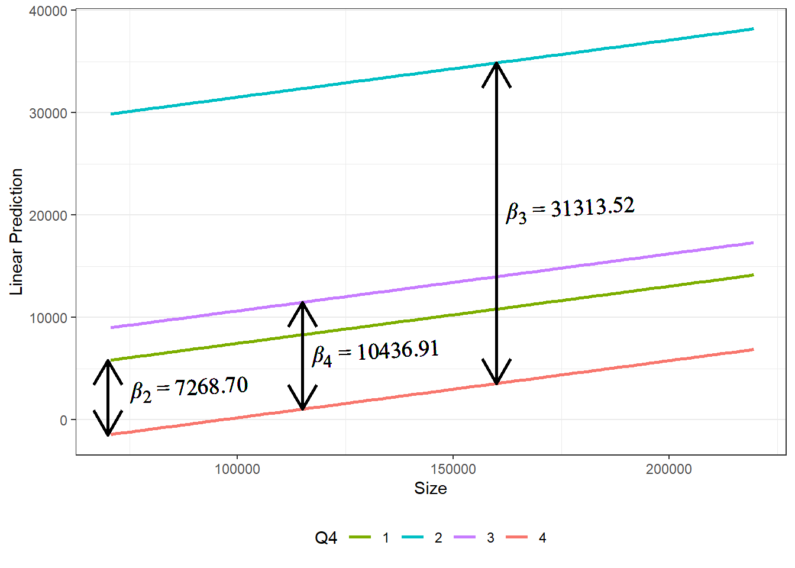
2.8 Suggested Readings
- R for Marketing Research and Analytics. 2nd Edition (2019). Chapman, Chris; McDonnel Feit, Elea
- BGSU Library Link:
https://librarysearch.bgsu.edu/permalink/01OHIOLINK_BGSU/i5ro6c/alma9926179903408506 - Chapter 7
- BGSU Library Link:
- OpenIntro Statistics. 4th Edition (2019). Diez, David; Cetinkaya-Rundel, Mine; Barr, Christopher D.
- Available at OpenIntro.org:
https://www.openintro.org/book/os/ - Chapter 8: Introduction to linear regression
- Chapter 9: Multiple and logistic regression
- Available at OpenIntro.org:
- Multivariate Data Analysis. Hair, Joseph F.; Black, William C.; Babin, Barry J.; Anderson, Rolph E.
- 7th Edition: Search for “multivariate data analysis 7th edition hair”
- Chapter 4: Multiple Regression Analysis
- 5th Edition: Course reserves
- Chapter 4: Multiple Regression Analysis
- 7th Edition: Search for “multivariate data analysis 7th edition hair”